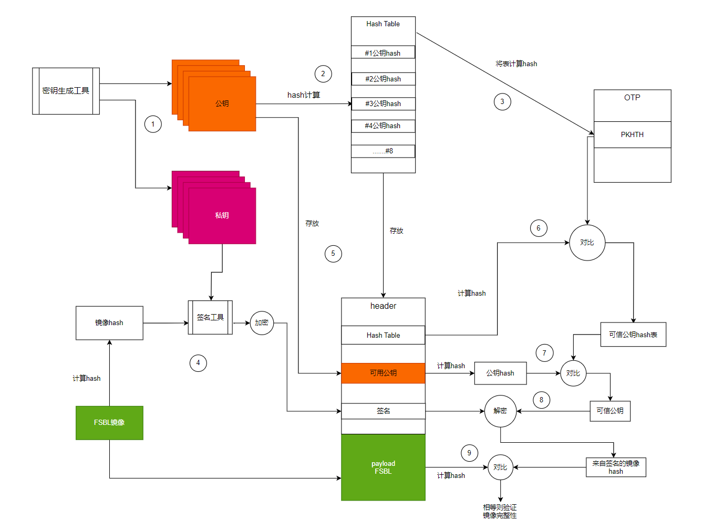

1 使用密钥生成工具，生成八对公钥私钥。
2 | 8个公钥经过hash处理，将八个hash值放在一张表里
3 计算表的hash值，存放在OTP中（一次性编程存储器，不能擦除和修改）。BSEC 可以理解为管理 OTP 的一种机制或控制器，进行对OTP内容的操作。
4 签名，计算镜像的hash，签名工具将该哈希值用私钥签名（通过ECC算法————非对称加密，生成了一个签名），公钥和签名放入header中。
5 将Hash Table存放在header中，可用公钥存放在header中。
6 计算（哈希值表）的hash，与OTP中的PKHTH（公钥hash表的哈希）比较。验证我们的公钥hash表是没有被改变的，得到可信公钥hash表。
7 计算header中可用公钥的hash（用什么公钥，验证哪个），与表中的hash比较，验证。如果相等，我们拿到了可信的公钥。
8 使用可信公钥将签名进行解密，得到签名镜像的hash。
9 计算header中FSBL的hash，与签名镜像的hash比较，如果相等，则镜像完整。
PS:加密解密主密钥，并非业务密钥，使用派生常数，派生加密解密密钥。（主密钥可以存储在HSM中避免明文暴露。）
PRF CMAC 派生是一种通过基于 CMAC 的伪随机函数从主密钥中派生多个密钥的技术。这种方法在许多加密协议中应用广泛，能够为密钥管理和安全通信提供强大的支持。通过合理地应用 CMAC 和 PRF，可以生成不可预测且安全的密钥，确保数据的保密性、完整性和认证。
1 使用密钥生成工具生成加密解密主密钥，将加密解密主密钥存储在OTP中。
2 加密解密主密钥根据派生常数，进行PRF CMAC派生，生成AES密钥（对称加密，加密解密密钥相同）。
3 将FBSL的明文二进制文件计算hash，取哈希的128位最高有效值，将AES密钥的初始向量设置为128位最高有效值，加密FSBL明文得到FSBL文件存储在header中。
4 将FSBL哈希128位最高有效值，派生常数存储在header中。
解密 ROM代码：5 OTP中的加密解密主密钥根据派生常数，进行PRF CMAC派生得到AES密钥。
6 AES密钥，使用header中的FSBL哈希128位最高有效位（作为初始向量），解密header中的FSBL加密文件，得到FSBL明文。
7 将FSBL明文计算hash 与header中的FSBL哈希128位最高有效位进行比较，若相等，则镜像完整。 （在镜像存储传输的过程中，还有可能因为自身原因，网络传输错误，媒介损坏，编码问题等出现错误，因此，更应进行镜像的验证。）

1、 FSBL是在BootROM之后启动的引导程序。由BootROM加载到SYSRAM或者直接在线性Flash上运行。FSBL主要完成以下工作：
1） 根据XPS(或vivado)中的配置，完成PS端的初始化。（MIO 、Clock 、DDR）
2） 使用比特流文件对PL进行配置 。
3） 加载第二阶段引导程序（SSBL）或者裸跑程序（无操作系统时）到DDR。
4） 跳转到DDR执行SSBL或者裸跑程序。
FSBL 从SYSRAM 执行，此 bootloader 初始化 clock tree 和 DDR controller 的 （部分）。
最后，FSBL 将第二阶段引导加载程序 （SSBL） 加载到 DDR 外部 RAM 中并跳转到它。
BL1是信任链的根所在,在STM32 MPU中，BL1被删除使用只读程序ROM,
具有最高的执行权限EL3。
BL2在flash中的一段可信安全启动代码，它的可信建立在ROM对它的验证，主要完成一些平台相关的初始化，比如对ddr的初始化
在完成初始化后寻找BL31或者BL33进行执行；如果找到了BL31则不会继续调用BL33，如果没有BL31则BL33必须有。
BL31作为EL3最后的安全堡垒，它不像BL1和BL2是一次性运行的。
它的主要任务是找到BL32，验签，并运行BL32。
BL32是所谓的secure os
一般在BL32会运行OPTee OS + 安全app，它是一个可信安全的OS运行在EL1并在EL0启动可信任APP（如指纹信息，移动支付的密码等），并在Trust OS运行完成后通过SMC指令返回BL31，BL31切换到Non-Seucre World继续执行BL33。
到了BL33这里就是Normal Wrold了，运行的都是非安全固件，也就是我们常见的UEFI firmware或者u-boot，也可能是直接启动Linux kernel。